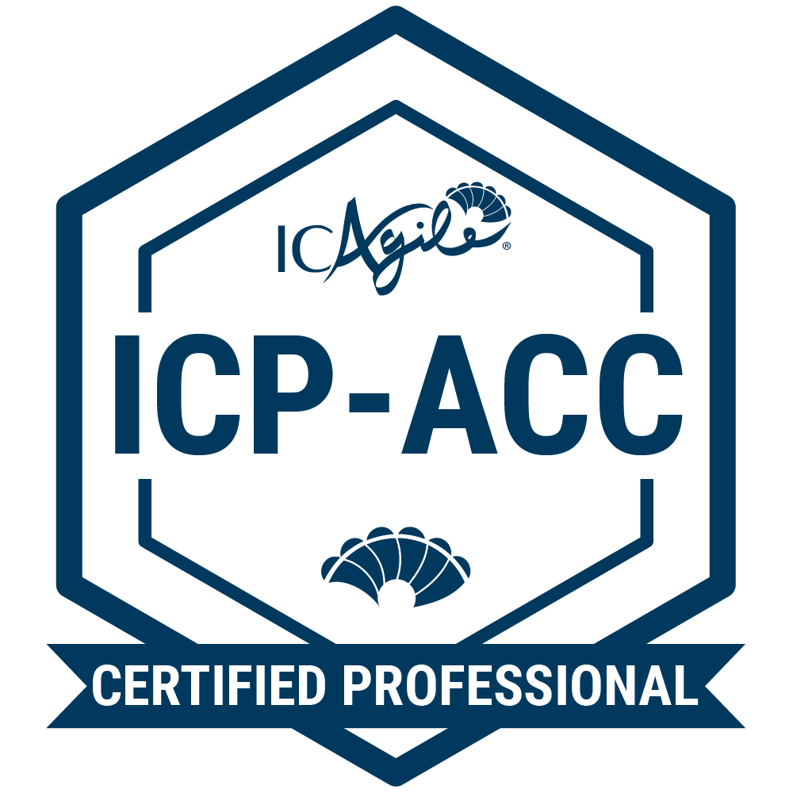
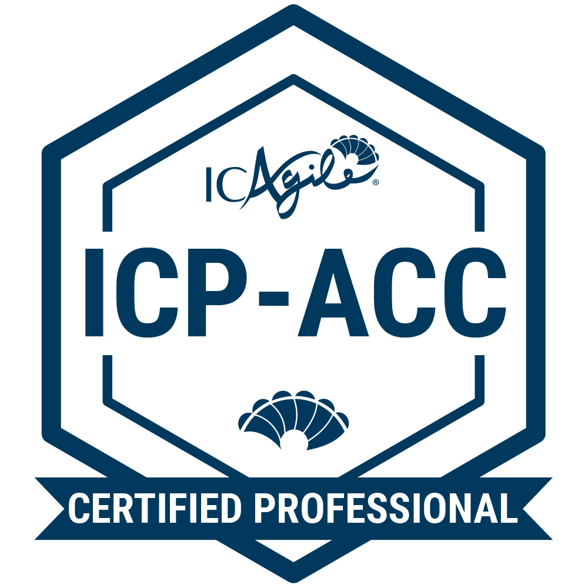

EJECUCIÓN SISTÉMICA · LIDERAZGO
Alineo Liderazgo y Ejecución Sistémica para convertir grandes ideas en resultados predecibles y sostenibles.

 



Mi experiencia proviene de más de 20 años liderando la intersección entre negocio y tecnología. He estado en tu lugar: sé lo que es tener una estrategia brillante que falla en la ejecución. Mi misión es cerrar esa brecha.
Combino Coaching Sistémico (ICF Nivel 3) con marcos de Ejecución Ágil (OKRs, Kanban, unFIX) para instalar el mindset ejecutivo que necesita tu equipo. Mi enfoque no es la certificación, sino la transformación sustentable.
Desarrollamos el mindset ejecutivo y la cadencia operativa para que el crecimiento sea predecible, no heroico.
Instalamos OKRs y Kanban para eliminar el modo bombero, garantizando que los equipos se enfoquen solo en lo que genera impacto y flujo.
Alineamos equipos (p. ej., con unFIX) y gestionamos el cambio para que la organización se adapte antes que el mercado.
Líderes (CEOs, directores, founders, managers) que necesitan flexibilidad, foco y cadencia para ser catalizadores del cambio.
Equipos que requieren Agilidad, objetivos alineados, resultados medibles y mejora continua.
Organizaciones que buscan alinear estructura, liderazgo y cultura con ejecución sustentable.
Reunión gratuita de aproximación inicial para entender el contexto, necesidades y mejores próximos pasos.
Sin costo
ReservarIntervención corta (2–4 semanas) para instalar foco y cadencia (OKRs/Kanban), con mentoring ejecutivo y tablero de resultados.
Formato “muestra” con entregables claros.
Programa de 3–6 meses. Coaching 1:1 (semanal o quincenal), OKRs y plan de desarrollo; métricas de impacto y revisiones ejecutivas.
Plan personalizado por objetivos.
Una guía breve para diseñar objetivos con foco, evidencias y aprendizaje.


Reserve una Sesión de Diagnóstico gratuita de 30 minutos para trazar su hoja de ruta.